Nature, 2012
3 populations of all ages
OTU: grouping of microorganisms by genetic similarity
α-diversity: intra-sample diversity
here measured by fraction of shared phylogeny branch (UniFrac)
β-diversity: inter-sample diversity
here measured by OTU counts
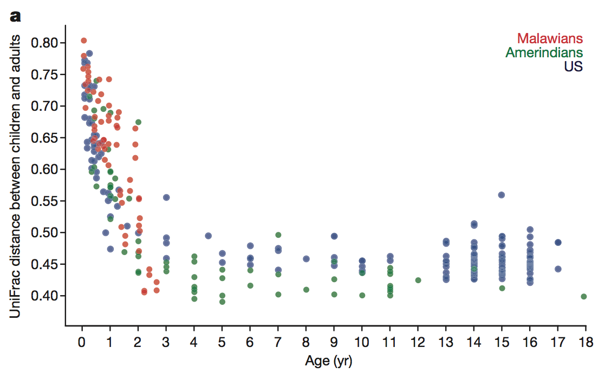 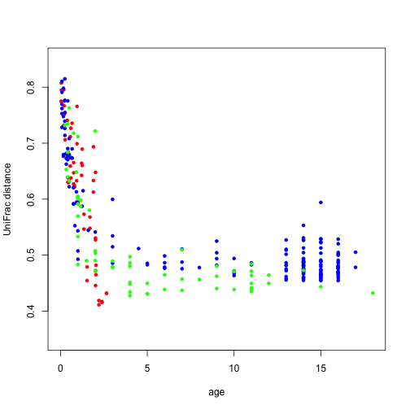
Means of α-diversity of children to all adults in same country against age
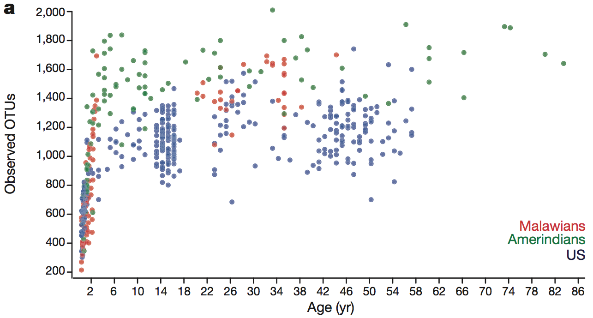
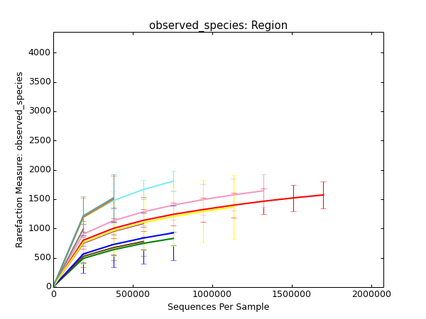 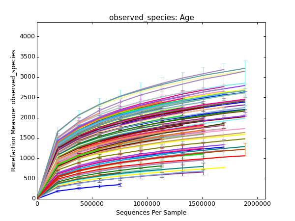
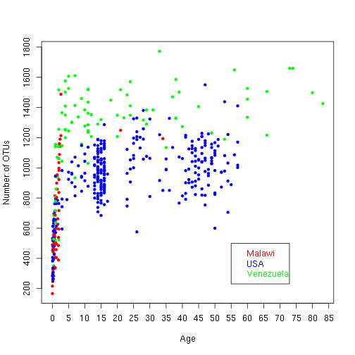
Numbers of OTUs against age
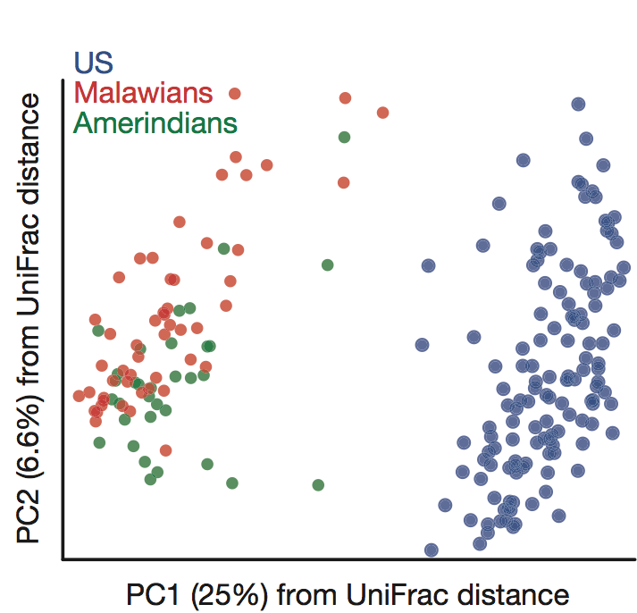 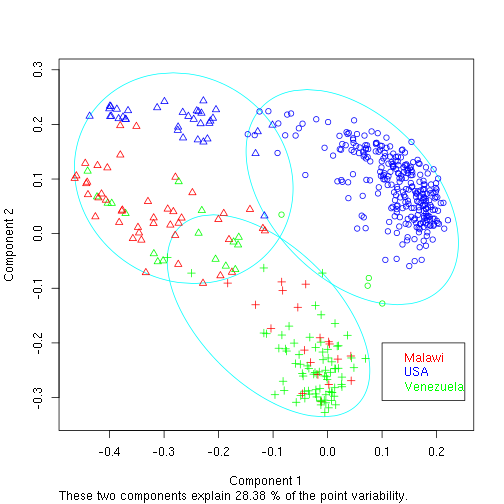
Measure: pairwise β-diversity of samples
What about the linear separation?
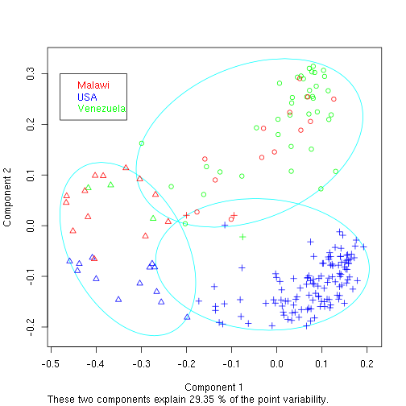 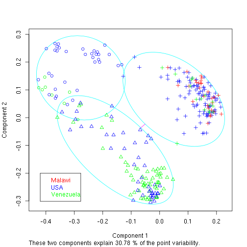
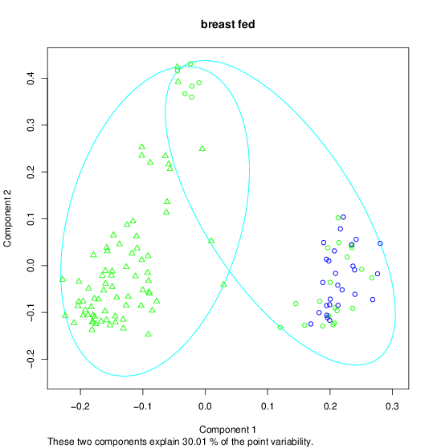
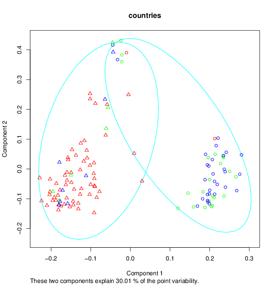
PAM: one-dimensional measure used
visually: better separation
SVM prediction success of adult samples against number of used OTUs, 20-fold cross-validation. Blue: success of PAM.
The 16S rRNA analysis